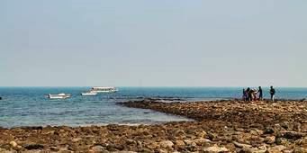

<p style="text-align: justify;">St. Martin (Island) is the only coral island in Bangladesh a small island St. Martin is in the northeast part of the Bay of Bengal, about 9 km south of the tip of the Cox's Bazar-Teknaf peninsula. It is about 8 km west of the northwest coast of Myanmar at the mouth of the Naf River. Also called (The local name) "Narical Gingira", also spelled "Narikel Janjina/Jinjera" and has an extension named Chera Dwip.</p>
